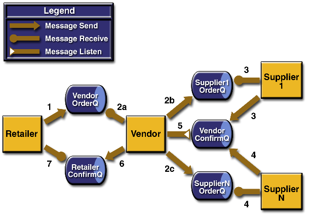

| JavaTM Message Service Tutorial |
| Tutorial Homepage | TOC | Prev | Next | Index |
A JMS Client Examples
This appendix contains a number of sample programs that illustrate JMS API concepts and features. The samples are as follows:
DurableSubscriberExample.java, a program that illustrates the use of durable subscriptionsTransactedExample.java, a program that shows how to use transactions in standalone applicationsAckEquivExample.java, a program that illustrates acknowledgment modesSampleUtilities.java, a utility class containing methods called by the other sample programsThe programs are all self-contained threaded applications. The programs include producer and consumer classes that send and receive messages. If you downloaded the tutorial examples as described in the preface, you will find the examples for this chapter in the directory
jms_tutorial/examples/appendix(on UNIX® systems) orjms_tutorial\examples\appendix(on Microsoft Windows systems). You can compile and run the examples using the instructions in Chapter 4.A.1 Durable Subscriptions
The
DurableSubscriberExample.javaprogram shows how durable subscriptions work. It demonstrates that a durable subscription is active even when the subscriber is not active. The program contains aDurableSubscriberclass, aMultiplePublisherclass, a main method, and a method that instantiates the classes and calls their methods in sequence.The program begins like any publish/subscribe program: The subscriber starts, the publisher publishes some messages, and the subscriber receives them. At this point, the subscriber closes itself. The publisher then publishes some messages while the subscriber is not active. The subscriber then restarts and receives the messages.
Before you run this program, create a connection factory with a client ID. You can use a command similar to the one shown in Section 8.2.3, "Creating a Connection Factory." Then specify the connection factory name and the topic name on the command line when you run the program, as in the following sample command, for a Microsoft Windows system:
java -Djms.properties=%J2EE_HOME%\config\jms_client.properties DurableSubscriberExample DurableTopicCF jms/TopicThe output looks something like this:
Connection factory name is DurableTopicCF Topic name is jms/Topic Java(TM) Message Service 1.0.2 Reference Implementation (build b14) Starting subscriber PUBLISHER: Publishing message: Here is a message 1 PUBLISHER: Publishing message: Here is a message 2 PUBLISHER: Publishing message: Here is a message 3 SUBSCRIBER: Reading message: Here is a message 1 SUBSCRIBER: Reading message: Here is a message 2 SUBSCRIBER: Reading message: Here is a message 3 Closing subscriber PUBLISHER: Publishing message: Here is a message 4 PUBLISHER: Publishing message: Here is a message 5 PUBLISHER: Publishing message: Here is a message 6 Starting subscriber SUBSCRIBER: Reading message: Here is a message 4 SUBSCRIBER: Reading message: Here is a message 5 SUBSCRIBER: Reading message: Here is a message 6 Closing subscriber Unsubscribing from durable subscriptionA.2 Transactions
The
TransactedExample.javaprogram demonstrates the use of transactions in a JMS client application. The program represents a highly simplified e-Commerce application, in which the following things happen.
- A retailer sends a message to the vendor order queue, ordering a quantity of computers, and waits for the vendor's reply.
- The vendor receives the retailer's order message and places an order message into each of its suppliers' order queues, all in one transaction. This JMS transaction combines one synchronous receive with multiple sends.
- One supplier receives the order from its order queue, checks its inventory, and sends the items ordered to the destination named in the order message's
JMSReplyTofield. If it does not have enough in stock, the supplier sends what it has. The synchronous receive and the send take place in one JMS transaction.- The other supplier receives the order from its order queue, checks its inventory, and sends the items ordered to the destination named in the order message's
JMSReplyTofield. If it does not have enough in stock, the supplier sends what it has. The synchronous receive and the send take place in one JMS transaction.- The vendor receives the replies from the suppliers from its confirmation queue and updates the state of the order. Messages are processed by an asynchronous message listener; this step illustrates using JMS transactions with a message listener.
- When all outstanding replies are processed for a given order, the vendor sends a message notifying the retailer whether it can fulfill the order.
- The retailer receives the message from the vendor.
Figure A.1 illustrates these steps.

Figure A.1 Transactions: JMS Client Example
The program contains five classes:
Retailer,Vendor,GenericSupplier,VendorMessageListener, andOrder. The program also contains a main method and a method that runs the threads of theRetail,Vendor, and two supplier classes.All the messages use the
MapMessagemessage type. Synchronous receives are used for all message reception except for the case of the vendor processing the replies of the suppliers. These replies are processed asynchronously and demonstrate how to use transactions within a message listener.At random intervals, the
Vendorclass throws an exception to simulate a database problem and cause a rollback.All classes except
Retaileruse transacted sessions.The program uses five queues. Before you run the program, create the queues and name them
A,B,C,DandE.When you run the program, specify on the command line the number of computers to be ordered. For example, on a Microsoft Windows system:
java -Djms.properties=%J2EE_HOME%\config\jms_client.properties TransactedExample 3The output looks something like this:
Quantity to be ordered is 3 Java(TM) Message Service 1.0.2 Reference Implementation (build b14) Java(TM) Message Service 1.0.2 Reference Implementation (build b14) Java(TM) Message Service 1.0.2 Reference Implementation (build b14) Java(TM) Message Service 1.0.2 Reference Implementation (build b14) Retailer: ordered 3 computer(s) Vendor: JMSException occurred: javax.jms.JMSException: Simulated database concurrent access exception javax.jms.JMSException: Simulated database concurrent access exception at TransactedExample$Vendor.run(TransactedExample.java:300) Vendor: rolled back transaction 1 Vendor: Retailer ordered 3 Computer(s) Vendor: ordered 3 Monitor(s) Vendor: ordered 3 Hard Drive(s) Hard Drive Supplier: Vendor ordered 3 Hard Drive(s) Hard Drive Supplier: sent 3 Hard Drive(s) Vendor: committed transaction 1 Monitor Supplier: Vendor ordered 3 Monitor(s) Monitor Supplier: sent 3 Monitor(s) Hard Drive Supplier: committed transaction Monitor Supplier: committed transaction Vendor: Completed processing for order 1 Vendor: sent 3 computer(s) Vendor: committed transaction 2 Retailer: Order filled Retailer: placing another order Retailer: ordered 6 computer(s) Vendor: Retailer ordered 6 Computer(s) Vendor: ordered 6 Monitor(s) Vendor: ordered 6 Hard Drive(s) Vendor: committed transaction 1 Monitor Supplier: Vendor ordered 6 Monitor(s) Hard Drive Supplier: Vendor ordered 6 Hard Drive(s) Hard Drive Supplier: sent 6 Hard Drive(s) Monitor Supplier: sent 0 Monitor(s) Monitor Supplier: committed transaction Hard Drive Supplier: committed transaction Vendor: Completed processing for order 2 Vendor: unable to send 6 computer(s) Vendor: committed transaction 2 Retailer: Order not filledA.3 Acknowledgment Modes
The
AckEquivExample.javaprogram shows how the following two scenarios both ensure that a message will not be acknowledged until processing of it is complete:
- Using an asynchronous receiver--a message listener--in an
AUTO_ACKNOWLEDGEsession- Using a synchronous receiver in a
CLIENT_ACKNOWLEDGEsessionWith a message listener, the automatic acknowledgment happens when the
onMessagemethod returns--that is, after message processing has finished. With a synchronous receiver, the client acknowledges the message after processing is complete. (If you useAUTO_ACKNOWLEDGEwith a synchronous receive, the acknowledgment happens immediately after thereceivecall; if any subsequent processing steps fail, the message cannot be redelivered.)The program contains a
SynchSenderclass, aSynchReceiverclass, anAsynchSubscriberclass with aTextListenerclass, aMultiplePublisherclass, amainmethod, and a method that runs the other classes' threads.The program needs two queues, a topic, and a connection factory with a client ID, similar to the one in the example in Section A.1, "Durable Subscriptions." You can use existing administered objects or create new ones. Edit the names at the beginning of the source file before compiling if you do not use the objects already specified. You can run the program with a command on one line similar to the following example for UNIX systems:
java -Djms.properties=$J2EE_HOME/config/jms_client.properties AckEquivExamplejava -Djms.properties=$J2EE_HOME/config/jms_client.properties AckEquivExample Queue name is controlQueue Queue name is jms/Queue Topic name is jms/Topic Connection factory name is DurableTopicCF Java(TM) Message Service 1.0.2 Reference Implementation (build b14) Java(TM) Message Service 1.0.2 Reference Implementation (build b14) SENDER: Created client-acknowledge session RECEIVER: Created client-acknowledge session SENDER: Sending message: Here is a client-acknowledge message RECEIVER: Processing message: Here is a client-acknowledge message RECEIVER: Now I'll acknowledge the message SUBSCRIBER: Created auto-acknowledge session PUBLISHER: Created auto-acknowledge session PUBLISHER: Receiving synchronize messages from controlQueue; count = 1 SUBSCRIBER: Sending synchronize message to controlQueue PUBLISHER: Received synchronize message; expect 0 more PUBLISHER: Publishing message: Here is an auto-acknowledge message 1 PUBLISHER: Publishing message: Here is an auto-acknowledge message 2 PUBLISHER: Publishing message: Here is an auto-acknowledge message 3 SUBSCRIBER: Processing message: Here is an auto-acknowledge message 1 SUBSCRIBER: Processing message: Here is an auto-acknowledge message 2 SUBSCRIBER: Processing message: Here is an auto-acknowledge message 3A.4 Utility Class
The
SampleUtilitiesclass, inSampleUtilities.java, is a utility class for the other sample programs. It contains the following methods:
getQueueConnectionFactorygetTopicConnectionFactorygetQueuegetTopicjndiLookupreceiveSynchronizeMessagessendSynchronizeMessagesIt also contains the class
DoneLatch, which has the following methods:
This Tutorial contains information on the 1.3.1 version of the Java 2 Platform, Enterprise Edition.
Copyright © 2002 Sun Microsystems, Inc. All rights reserved.